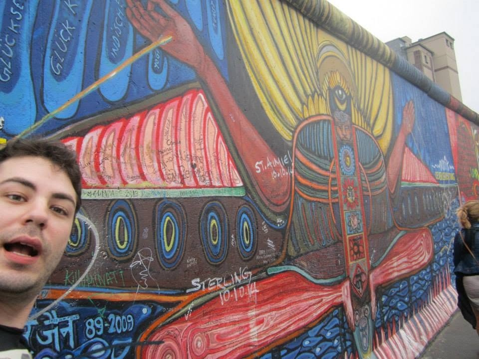
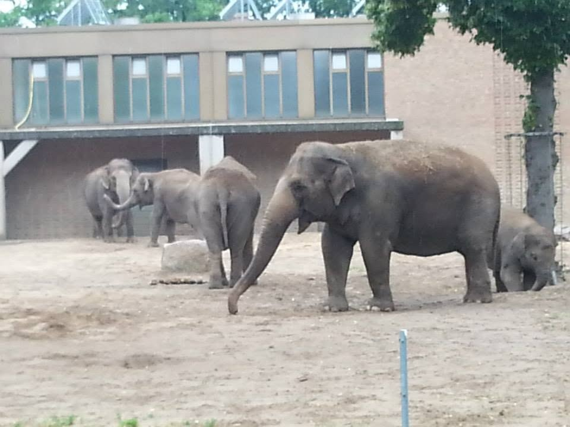
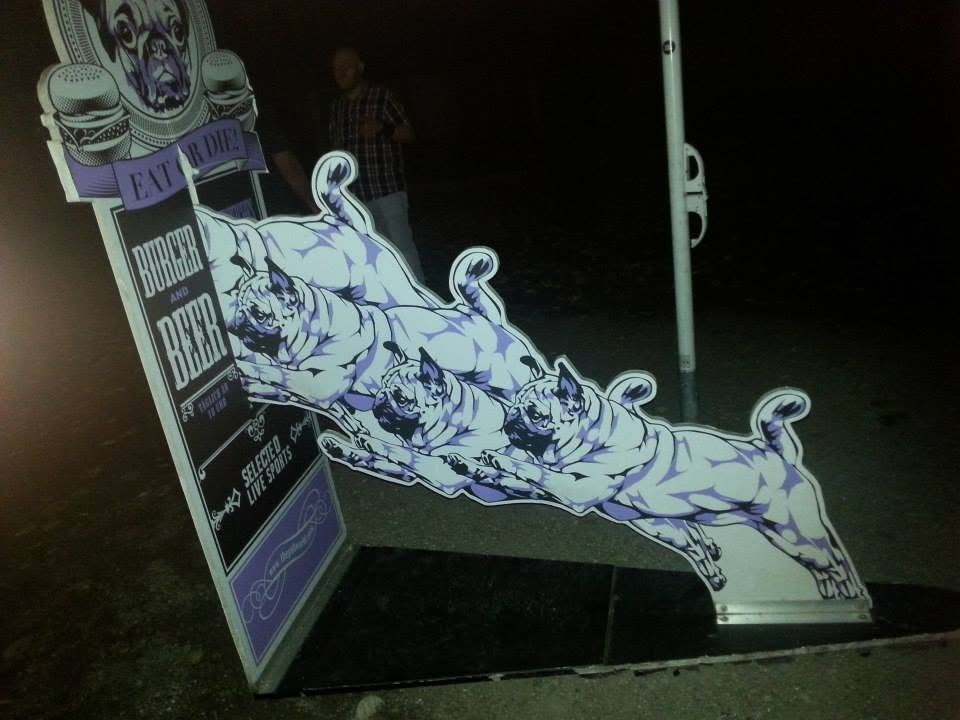
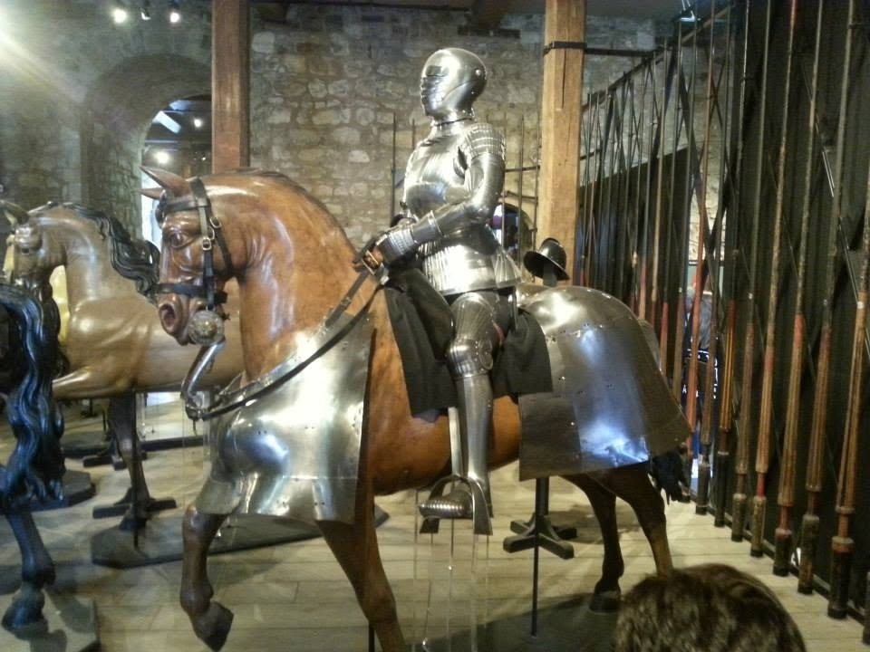
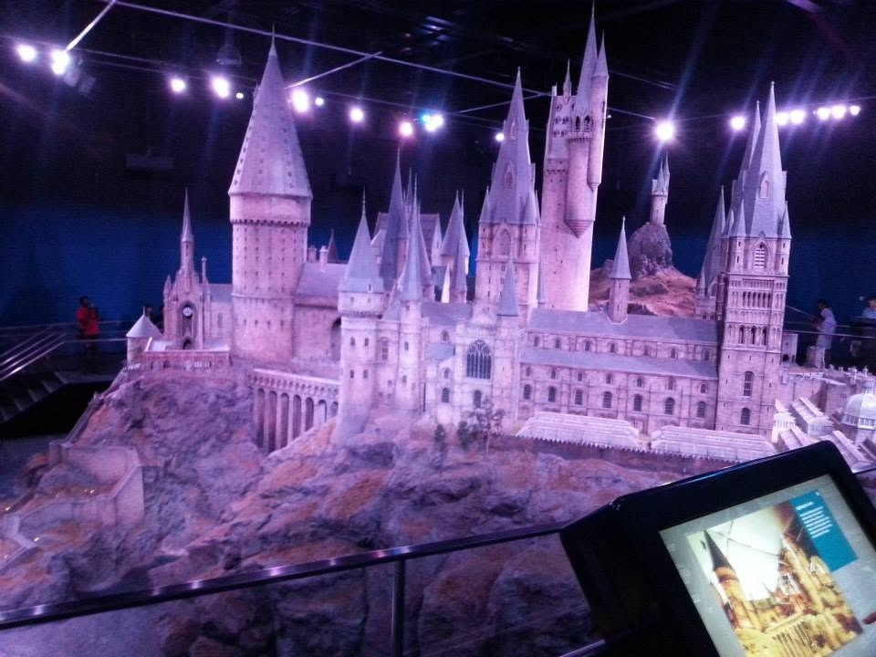
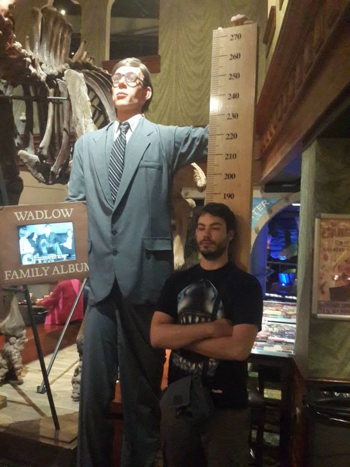
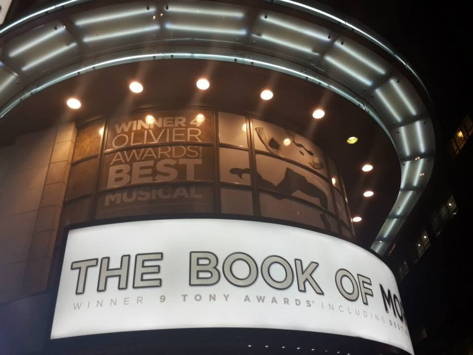
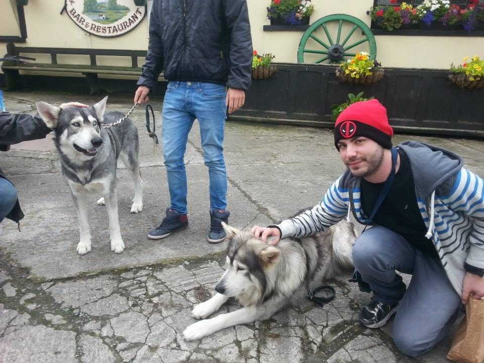

The Berlin Wall
A powerful reminder of the city’s divided past. The wall that separated East and West Berlin stood for 28 years.
A journey through Germany, the Netherlands, the United Kingdom, Ireland, and the Balkans

After completing my military service, my two closest friends and I set out on a month-long journey across Europe. What follows is a record of the places we visited and the experiences that remain with me to this day.
We began in Berlin, where we spent several days exploring the city.

A powerful reminder of the city’s divided past. The wall that separated East and West Berlin stood for 28 years.

One of Europe’s most renowned zoos, home to a wide range of animals including pandas, elephants, penguins, and more.

A personal favorite. Part of a larger chain, this particular location had a distinctive and memorable focus on pugs.
After a week in Berlin we rented a car and drove through Germany, visiting several castles and landmarks along the way. We then continued by train to Amsterdam.
We stayed in a small hostel whose manager spoke some Hebrew and shared that he had Assyrian heritage — an unexpected and pleasant connection.
One friend returned home after Amsterdam. My remaining friend and I continued to London, where we were fortunate to stay in a five-star hotel for a week through a work-related arrangement.

A historic fortress that has housed the Crown Jewels and the Yeoman Warders for centuries.

An in-depth look at the sets, props, and production design from the Harry Potter films.

A museum dedicated to unusual artifacts, oddities, and curiosities from around the world.

A sharp and highly entertaining musical comedy based on the teachings of The Church of Jesus Christ of Latter-day Saints.
From London we continued to Ireland. We visited a number of bars and other locations connected to the filming of Game of Thrones, and even met the dogs that portrayed the direwolves.

We then travelled to several countries in the Balkans, including Croatia. In addition to exploring the region, we went canoeing on a couple of rivers — one of the more memorable outdoor experiences of the trip.
After roughly a month on the road, we returned home. The journey remains one of the most meaningful experiences of my life.
— Aviv